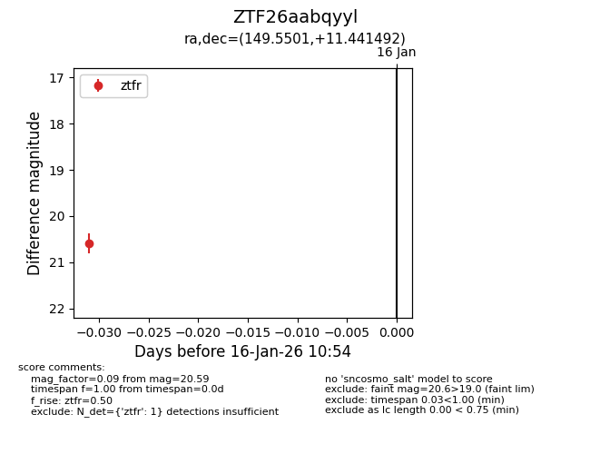
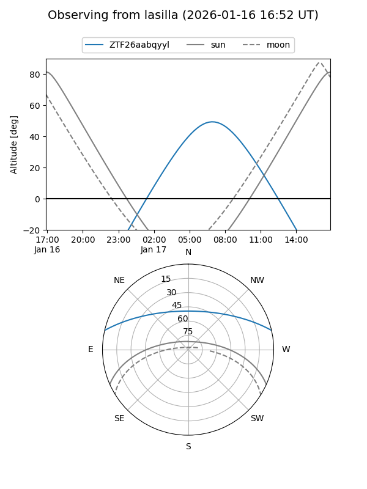
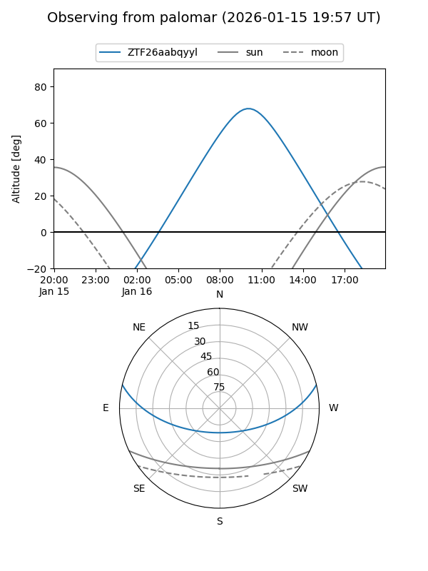

ZTF26aabqyyl
Target ZTF26aabqyyl at 2026-01-16 10:55
Aliases and brokers:
FINK: link
Lasair: link
ALeRCE: link
alt names
ZTF26aabqyyl (ztf,fink_ztf)
Coordinates:
equatorial (ra, dec) = 149.5501,+11.44149
equatorial (HMS+DMS) = 09:58:12.02,+11:26:29.37
galactic (l, b) = (225.4008,+46.48481)
Flags:
Photometry:
last ztfr=20.59
1 ztfr detections
Lightcurve

Visibility


Additional plots